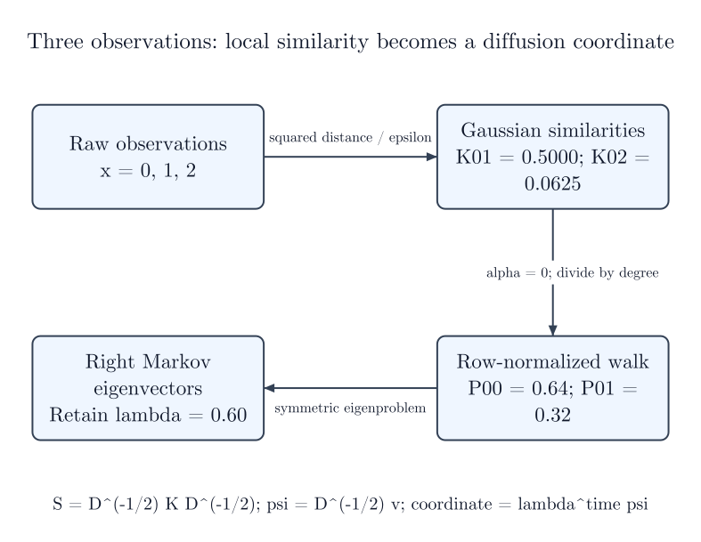
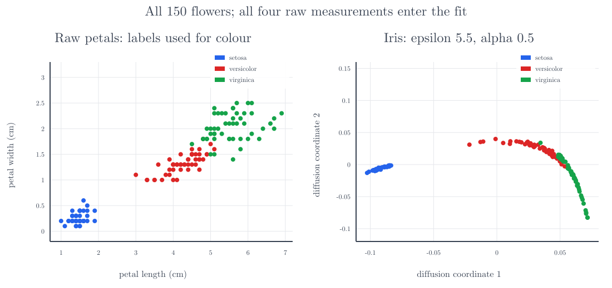
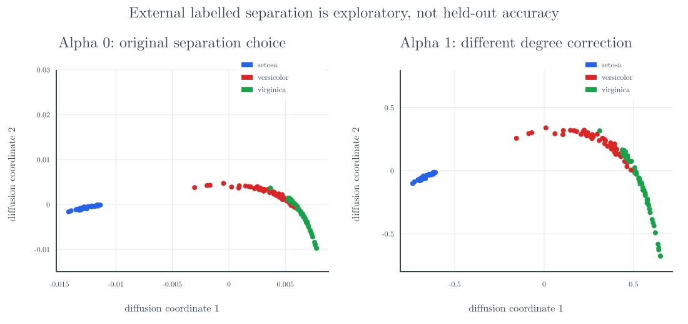
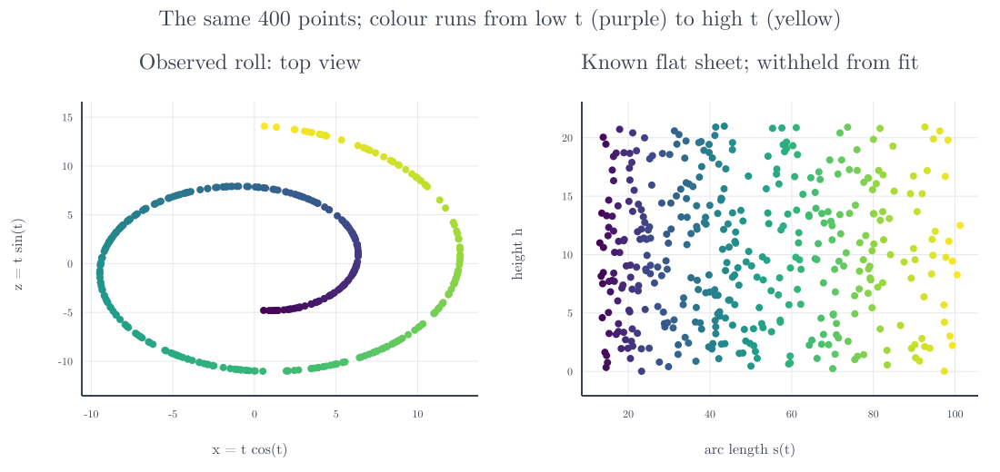
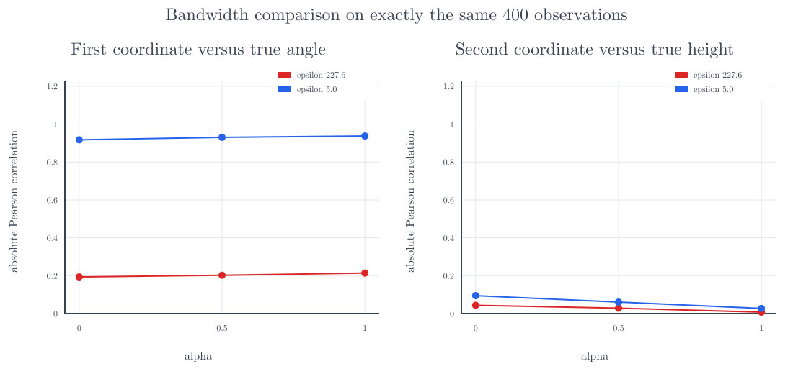
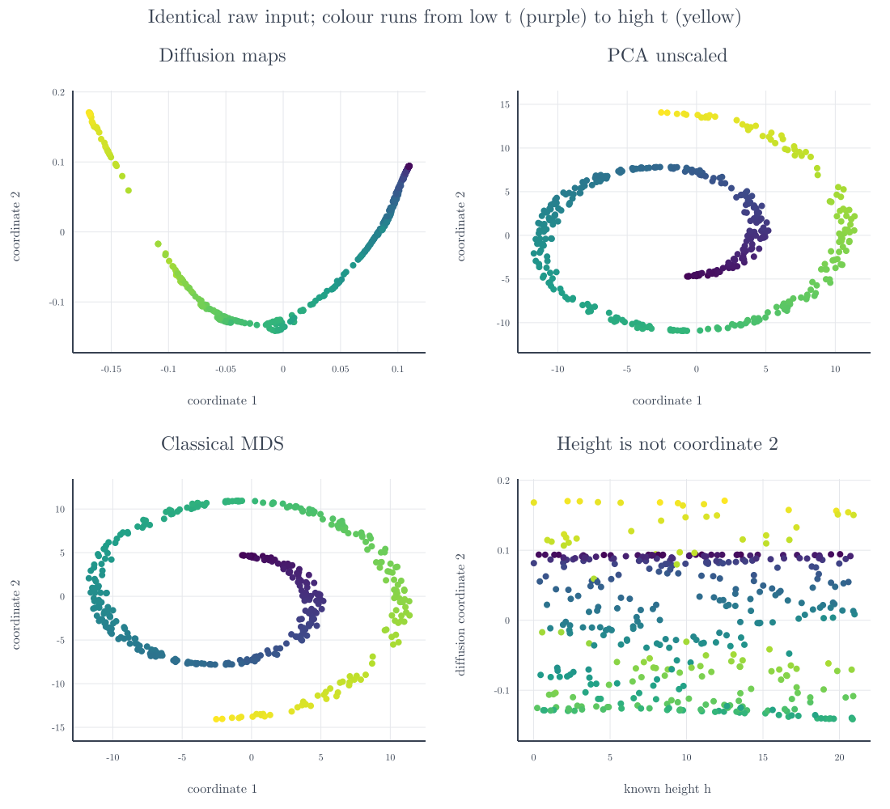

Diffusion Maps: From Three Points to Iris and a Swiss Roll
Abstract
Given high-dimensional observations, we want a few coordinates that preserve how observations connect through nearby points. A global linear projection can miss a curved surface, while inappropriate neighbourhood scales can join unrelated parts of it. Diffusion maps builds coordinates from a reversible random walk on a Gaussian similarity graph. Three points make every normalization hand-checkable before we examine all 150 iris flowers and the original 400-point Swiss roll. Actual kernel and transition matrices expose the eigenvector scaling. Computed parameter comparisons retain the original iris separation and Swiss roll angle-recovery experiments, alongside the local-kernel failure to recover height in the first four coordinates. PCA and classical MDS provide controls on exactly the same raw observations.
A walk on three points
Take the one-dimensional observations x=(0,1,2), epsilon=1/log(2), alpha=0 and diffusion time tau=1. The Gaussian similarities of neighbouring points are 1/2; the similarity between the endpoints is 1/16. Keep the unit self-loops. Thus
The rows of P sum to one. Its eigenvalues are 1, 3/5 and 9/50. The stationary probabilities are (25,32,25)/82. The nonconstant antisymmetric eigenvector distinguishes the two endpoints. Its normalization matters: the library uses unit norm weighted by d, rather than by the stationary probabilities pi=d/sum(d).
This complete program prints the matrices from the shared executing fit kernel. It then checks the endpoint diffusion distance at four times against the hand-derived formula D_tau(0,2)2=(164/25)(3/5)(2 tau). The other nonconstant eigenvector has equal endpoint values and contributes zero for this pair. The full three-point matrices remain visible even though the model retains only one nontrivial coordinate.
#include <dm/dm.hpp>
int main(){
std::filesystem::create_directories("build");
dm::dstruct::DataFrame d;d.add_column("x",std::vector<double>{0,1,2});
const auto t=dm::stats::diffusion_maps_trace(d,{"x"},{1,1/std::log(2.0),0,1});
std::print("| row | K0 | K1 | K2 | degree | P0 | P1 | P2 | stationary |\n| ---: | ---: | ---: | ---: | ---: | ---: | ---: | ---: | ---: |\n");
for(std::size_t i=0;i<3;++i)std::print("| {} | {:.4f} | {:.4f} | {:.4f} | {:.4f} | {:.4f} | {:.4f} | {:.4f} | {:.6f} |\n",i,t.kernel(i,0),t.kernel(i,1),t.kernel(i,2),t.degrees[i],t.transition(i,0),t.transition(i,1),t.transition(i,2),t.stationary[i]);
std::print("\nEigenvalues: {:.6f}, {:.6f}, {:.6f}.\n\n",t.eigenvalues[0],t.eigenvalues[1],t.eigenvalues[2]);
std::print("| time | spectral endpoint distance squared | closed form | absolute error |\n| ---: | ---: | ---: | ---: |\n");
double total=0;for(double degree:t.degrees)total+=degree;
const double delta=t.right_eigenvectors(0,1)-t.right_eigenvectors(2,1);
for(double time:{0.,1.,2.,8.}){
const double actual=total*delta*delta*std::pow(t.eigenvalues[1],2*time),expected=164./25*std::pow(.6,2*time);
if(std::abs(actual-expected)>1e-12)return 1;
std::print("| {:.0f} | {:.8f} | {:.8f} | {:.2e} |\n",time,actual,expected,std::abs(actual-expected));
}
dm::graphics::Diagram diagram(65,1100);dm::graphics::DiagramNodeStyle box;box.width=4;box.height=1.8;box.font_size=23;
diagram.node("x",{0,0},"Raw observations\nx = 0, 1, 2",box)
.node("k",{7,0},std::format("Gaussian similarities\nK01 = {:.4f}; K02 = {:.4f}",t.kernel(0,1),t.kernel(0,2)),box)
.node("p",{7,-4},std::format("Row-normalized walk\nP00 = {:.2f}; P01 = {:.2f}",t.transition(0,0),t.transition(0,1)),box)
.node("e",{0,-4},std::format("Right Markov eigenvectors\nRetain lambda = {:.2f}",t.eigenvalues[1]),box)
.edge("x","k","squared distance / epsilon").edge("k","p","alpha = 0; divide by degree")
.edge("p","e","symmetric eigenproblem")
.text({3.5,2},"Three observations: local similarity becomes a diffusion coordinate",25)
.text({3.5,-6},"S = D^(-1/2) K D^(-1/2); psi = D^(-1/2) v; coordinate = lambda^time psi",20)
.save_svg("build/diffusion_three_points.svg");
}| row | K0 | K1 | K2 | degree | P0 | P1 | P2 | stationary |
|---|---|---|---|---|---|---|---|---|
| 0 | 1.0000 | 0.5000 | 0.0625 | 1.5625 | 0.6400 | 0.3200 | 0.0400 | 0.304878 |
| 1 | 0.5000 | 1.0000 | 0.5000 | 2.0000 | 0.2500 | 0.5000 | 0.2500 | 0.390244 |
| 2 | 0.0625 | 0.5000 | 1.0000 | 1.5625 | 0.0400 | 0.3200 | 0.6400 | 0.304878 |
Eigenvalues: 1.000000, 0.600000, 0.180000.
| time | spectral endpoint distance squared | closed form | absolute error |
|---|---|---|---|
| 0 | 6.56000000 | 6.56000000 | 8.88e-16 |
| 1 | 2.36160000 | 2.36160000 | 8.88e-16 |
| 2 | 0.85017600 | 0.85017600 | 6.66e-16 |
| 8 | 0.00185065 | 0.00185065 | 5.42e-18 |

What the normalization does
For an n by p matrix of complete raw feature rows, form the dense squared Euclidean distances and Gaussian kernel, including the diagonal:
Next let d_i=sum_j A_ij, D=diag(d), P=D(-1)A and S=D(-1/2) A D(-1/2). A is symmetric, so S is symmetric and P=D(-1/2) S D(1/2). If S v_l=lambda_l v_l and v_l has unit Euclidean norm, then psi_l=D(-1/2)v_l is a right eigenvector of P. The library returns the columns lambda_l^tau psi_l for l=1,...,k, discarding the leading constant mode. Using v directly, as in the original report's displayed embedding formula, would omit the degree correction.
Reversibility follows immediately: pi_i P_ij=A_ij/sum(d)=pi_j P_ji, with pi_i=d_i/sum(d). The constant right eigenvector has eigenvalue one. The Gaussian Gram matrix is positive semidefinite; the two diagonal congruences preserve that property, so S has a nonnegative spectrum in exact arithmetic. Numerical negative values within 128*n*machine_epsilon are clipped to zero; a more negative value causes an error. Nonnegative real tau defines the spectral filter; only integer tau is an ordinary count of discrete Markov steps. At tau=0, every retained mode has multiplier one, including a numerically zero mode.
For integer tau, compare complete transition distributions using
The second equality uses the orthonormal symmetric eigenbasis and similarity transform. The factor sum(d) is essential under the library's D-weighted normalization; multiplying its coordinates by sqrt(sum(d)) recovers the stationary-normalized convention. Retaining only k modes omits nonnegative terms, so the scaled embedded squared distance is a lower bound on this full spectral distance, subject to roundoff. Sign flips cancel from squared distances and absolute correlations. Rotations within a repeated eigenspace also leave the full subspace's distances unchanged.
[Coifman and Lafon (2006)](https://doi.org/10.1016/j.acha.2006.04.006) derive the diffusion construction and continuum limits. Alpha=0 uses kernel degrees directly; alpha=1/2 gives a different density weighting; alpha=1 approaches a density-independent Laplace–Beltrami operator under the paper's manifold, sampling and small-bandwidth conditions. Finite data at alpha=1 are not exactly density-free, nor must that choice maximize class separation.
Computing the dense distances costs O(n2 p); the symmetric decomposition costs O(n3). Working storage is O(n^2+n p), while the ordinary fitted model retains O(n k+n). The optional trace owns six n by n intermediate matrices plus the embedding and row vectors. It defaults to a 1000-observation cap, checked before dense allocation; zero disables only that cap. The ordinary model retains its existing uncapped interface. This is an in-sample spectral embedding with no optimizer, learned tensor weights or out-of-sample transform.
Iris: inspect the observations before interpreting the embedding
The bundled iris data contain 150 flowers, four measurements in centimetres and three species of 50 flowers each. Use all four measurements in their original units. Species labels enter only after fitting, for colour and external summaries. Petal length and width already show setosa separated from the other two species.
The global bandwidth diagnostic is the median squared distance among all 11,175 unordered pairs. The original fit used epsilon=5.5, close to but not equal to the measured median 5.57. We preserve that value. This program also prints the eighth-neighbour scale; it does not automatically choose epsilon from either statistic. With even counts the reusable scale summary uses the upper middle sorted value, matching the original report rather than averaging the two central distances.
#include <dm/dm.hpp>
int main(){
std::filesystem::create_directories("build");const auto iris=dm::datasets::iris();
const std::vector<std::string> features{"Sepal.Length","Sepal.Width","Petal.Length","Petal.Width"};
std::vector<std::vector<double>> columns;for(const auto& name:features)columns.push_back(iris.numeric_column(name).values());
const auto x=dm::linalg::DenseMatrix<double>::from_columns(columns);
const auto scales=dm::stats::manifold_distance_scales(x,8);
const dm::stats::DiffusionMaps model(iris,features,{2,5.5,.5,1});
std::vector<std::string> labels;for(auto i:model.kept_row_indices())labels.push_back(iris.string_at("Species",i));
std::print("Rows: {}; numeric features: {}; complete rows: {}.\n\n",iris.nrows(),features.size(),model.observations());
std::print("| squared-distance diagnostic (cm squared) | value |\n| :--- | ---: |\n| global upper median | {:.4f} |\n| global mean | {:.4f} |\n| eighth-neighbour upper median | {:.4f} |\n\n",scales.upper_median_squared,scales.mean_squared,scales.upper_median_neighbor_squared);
std::print("Fit epsilon 5.5, alpha 0.5, time 1; eigenvalues {:.4f}, {:.4f}, {:.4f}.\n\n",model.eigenvalues()[0],model.eigenvalues()[1],model.eigenvalues()[2]);
auto raw=dm::graphics::RPlot::create();const std::vector<dm::graphics::RGB> colors{{37,99,235},{220,38,38},{22,163,74}};
std::size_t group=0;std::print("| species | rows |\n| :--- | ---: |\n");
for(const auto& species:std::vector<std::string>{"setosa","versicolor","virginica"}){
const auto subset=iris.filter([&](const dm::dstruct::DataFrame::Row& row){return row.get_string("Species")==species;});
std::print("| {} | {} |\n",species,subset.nrows());
raw.points(subset.numeric_column("Petal.Length").values(),subset.numeric_column("Petal.Width").values(),species,colors[group++],4);
}
raw.title("Raw petals: labels used for colour").x_label("petal length (cm)").y_label("petal width (cm)").y_limits(-.2,3.3);
auto fitted=model.plot_embedding(labels);fitted.title("Iris: epsilon 5.5, alpha 0.5").x_label("diffusion coordinate 1").y_label("diffusion coordinate 2").y_limits(-.12,.16);
dm::graphics::RLayout::create(1,2).add(raw).add(fitted).size(1100,520).title("All 150 flowers; all four raw measurements enter the fit").fit_panels().save_svg("build/diffusion_iris.svg");
}Rows: 150; numeric features: 4; complete rows: 150.
| squared-distance diagnostic (cm squared) | value |
|---|---|
| global upper median | 5.5700 |
| global mean | 9.1459 |
| eighth-neighbour upper median | 0.2400 |
Fit epsilon 5.5, alpha 0.5, time 1; eigenvalues 1.0000, 0.8132, 0.2910.
| species | rows |
|---|---|
| setosa | 50 |
| versicolor | 50 |
| virginica | 50 |

Alpha changes the geometry, not just the plotting colour
For each alpha, compute the grand centroid mu and labelled centroids mu_g in the two retained coordinates. The external diagnostic is
Expanding z_i-mu=(z_i-mu_g)+(mu_g-mu) makes the cross term vanish, so total scatter is W+B. The ratio is invariant to translation, rotation, sign flips and uniform nonzero scaling; it changes if the axes are scaled differently. It is a descriptive ratio, not an F statistic or held-out classification accuracy. The original same-data comparison selects alpha=0 for this particular two-coordinate separation score. It does not establish a universally optimal density correction.
We retain the original direct maximum coordinate differences as a diagnostic, but those depend on eigenvector sign and scale. Absolute Pearson correlation of the first coordinates helps distinguish a sign flip from a different ordering; separate eigenvalues and scatter ratios provide additional evidence. No species labels are passed to any fit constructor. The larger axes at alpha=1 reflect the D-weighted normalization, so compare structure as well as axis magnitudes.
#include <dm/dm.hpp>
int main(){
std::filesystem::create_directories("build");const auto iris=dm::datasets::iris();
const std::vector<std::string> features{"Sepal.Length","Sepal.Width","Petal.Length","Petal.Width"};
std::vector<std::string> labels;for(std::size_t i=0;i<iris.nrows();++i)labels.push_back(iris.string_at("Species",i));
std::print("| alpha | between scatter | within scatter | between / within | lambda1 |\n| ---: | ---: | ---: | ---: | ---: |\n");
for(double alpha:{0.,.5,1.}){
const dm::stats::DiffusionMaps m(iris,features,{2,5.5,alpha,1});const auto r=dm::stats::embedding_separation(m.embedding(),labels);
std::print("| {:.1f} | {:.6f} | {:.6f} | {:.4f} | {:.6f} |\n",alpha,r.between,r.within,r.ratio,m.eigenvalues()[1]);
}
const dm::stats::DiffusionMaps a(iris,features,{2,5.5,0,1}),b(iris,features,{2,5.5,1,1});
std::print("\n| coordinate | raw max absolute difference | absolute Pearson correlation |\n| ---: | ---: | ---: |\n");
for(std::size_t c=0;c<2;++c){double difference=0;for(std::size_t i=0;i<iris.nrows();++i)difference=std::max(difference,std::abs(a.embedding()(i,c)-b.embedding()(i,c)));
std::print("| {} | {:.4f} | {:.4f} |\n",c+1,difference,std::abs(dm::stats::pearson_correlation_test(a.dimension(c),b.dimension(c)).estimate1));}
auto p=a.plot_embedding(labels),q=b.plot_embedding(labels);
p.title("Alpha 0: original separation choice").x_label("diffusion coordinate 1").y_label("diffusion coordinate 2").y_limits(-.015,.03);
q.title("Alpha 1: different degree correction").x_label("diffusion coordinate 1").y_label("diffusion coordinate 2").y_limits(-.8,.8);
dm::graphics::RLayout::create(1,2).add(p).add(q).size(1100,520).title("External labelled separation is exploratory, not held-out accuracy").fit_panels().save_svg("build/diffusion_alpha.svg");
}| alpha | between scatter | within scatter | between / within | lambda1 |
|---|---|---|---|---|
| 0.0 | 0.011220 | 0.000865 | 12.9760 | 0.797016 |
| 0.5 | 0.705831 | 0.064614 | 10.9239 | 0.813234 |
| 1.0 | 44.189337 | 4.707999 | 9.3860 | 0.828073 |
| coordinate | raw max absolute difference | absolute Pearson correlation |
|---|---|---|
| 1 | 0.7211 | 0.9985 |
| 2 | 0.6674 | 0.9937 |

The original Swiss roll and its known coordinates
The original program sampled 400 points with mt19937_64 seed 42, interleaving two uniform draws per row:
The canonical generator now exposes that engine explicitly. Its default three-argument Xoshiro generator remains unchanged; requesting Mt19937 reproduces the original report's draw sequence with libstdc+. Standard-library uniform distribution mappings need not match across different C+ libraries. All experiments below obtain the same generated frame through this API, use x,y,z without scaling and keep t,height,arc_length outside the fit.
The angle parameter t is monotone along the spiral but is not distance along it. Its flat coordinate is s(t)=[t sqrt(1+t2)+asinh(t)]/2, since the curve's speed is sqrt(1+t2). The unrolled sheet is a rectangle in (s,h), roughly 89 by 21. Uniform t does not mean uniform arc length. We retain the original correlations with t and also report correlations with s. Neither coordinate correlation alone certifies a low-distortion two-dimensional recovery.
#include <dm/dm.hpp>
int main(){
std::filesystem::create_directories("build");
const auto roll=dm::datasets::swiss_roll(400,0,42,dm::datasets::SwissRollEngine::Mt19937);
const auto& x=roll.numeric_column("x").values();const auto& y=roll.numeric_column("y").values();const auto& z=roll.numeric_column("z").values();
const auto& angle=roll.numeric_column("t").values();const auto& arc=roll.numeric_column("arc_length").values();
const auto matrix=dm::linalg::DenseMatrix<double>::from_columns({x,y,z});
const auto scales=dm::stats::manifold_distance_scales(matrix,8);const auto colors=dm::graphics::value_colors(angle);
std::print("Swiss roll: {} rows; seed 42; mt19937_64; zero coordinate noise.\n\n",roll.nrows());
std::print("| diagnostic in raw squared units | value |\n| :--- | ---: |\n| pairwise upper median | {:.4f} |\n| pairwise mean | {:.4f} |\n| eighth-neighbour upper median | {:.4f} |\n\n",scales.upper_median_squared,scales.mean_squared,scales.upper_median_neighbor_squared);
std::print("First row: t={:.6f}, height={:.6f}, x={:.6f}, z={:.6f}.\n",angle[0],y[0],x[0],z[0]);
auto p=dm::graphics::RPlot::create();p.points_colored(x,z,colors,4).title("Observed roll: top view").x_label("x = t cos(t)").y_label("z = t sin(t)");
auto q=dm::graphics::RPlot::create();q.points_colored(arc,y,colors,4).title("Known flat sheet; withheld from fit").x_label("arc length s(t)").y_label("height h");
dm::graphics::RLayout::create(1,2).add(p).add(q).size(1100,520).title("The same 400 points; colour runs from low t (purple) to high t (yellow)").fit_panels().save_svg("build/diffusion_swiss_input.svg");
}Swiss roll: 400 rows; seed 42; mt19937_64; zero coordinate noise.
| diagnostic in raw squared units | value |
|---|---|
| pairwise upper median | 227.6188 |
| pairwise mean | 254.6998 |
| eighth-neighbour upper median | 11.4589 |
First row: t=11.829562, height=13.419659, x=8.761173, z=-7.948609.

Bandwidth can overwhelm the alpha effect
For this sample the global squared-distance median is about 227.6, while the median eighth-neighbour squared distance is about 11.46. The original choices epsilon=227.6 and epsilon=5 differ by a factor of about 45.5. At epsilon=227.6, a squared distance of 40 gives exp(-40/227.6), about 0.84; at epsilon=5 it gives exp(-8), about 0.00034. A broad kernel therefore connects across the roll's sheets much more strongly. The neighbour statistic is a diagnostic reference, not a guarantee of a good neighbourhood scale.
Fit all six epsilon/alpha combinations once each with four retained modes. The first table retains the original signed first-coordinate/angle and second-coordinate/height correlations, and adds the sign-invariant angle and arc-length magnitudes. The second table checks every one of the first four coordinates against height. The figure shows absolute correlations for comparisons that do not depend on arbitrary eigenvector sign. The tests use the separate matrix-power definition of diffusion distance, not just a second invocation of the fit, to check the normalization.
#include <dm/dm.hpp>
int main(){
std::filesystem::create_directories("build");
const auto roll=dm::datasets::swiss_roll(400,0,42,dm::datasets::SwissRollEngine::Mt19937);
const auto& t=roll.numeric_column("t").values();const auto& h=roll.numeric_column("height").values();const auto& arc=roll.numeric_column("arc_length").values();
auto p=dm::graphics::RPlot::create(),q=dm::graphics::RPlot::create();
std::vector<std::vector<double>> height_rows;
std::print("| epsilon | alpha | r(coord1,t) | r(coord2,height) | abs r(coord1,t) | abs r(coord1,arc length) |\n| ---: | ---: | ---: | ---: | ---: | ---: |\n");
std::size_t series=0;for(double epsilon:{227.6,5.}){std::vector<double> angles,heights;
for(double alpha:{0.,.5,1.}){
const dm::stats::DiffusionMaps m(roll,{"x","y","z"},{4,epsilon,alpha,1});
const double rt=dm::stats::pearson_correlation_test(m.dimension(0),t).estimate1,rh=dm::stats::pearson_correlation_test(m.dimension(1),h).estimate1;
const double rs=dm::stats::pearson_correlation_test(m.dimension(0),arc).estimate1;
angles.push_back(std::abs(rt));heights.push_back(std::abs(rh));
std::print("| {:.1f} | {:.1f} | {:.4f} | {:.4f} | {:.4f} | {:.4f} |\n",epsilon,alpha,rt,rh,std::abs(rt),std::abs(rs));
std::vector<double> row{epsilon,alpha};for(std::size_t c=0;c<4;++c)row.push_back(std::abs(dm::stats::pearson_correlation_test(m.dimension(c),h).estimate1));height_rows.push_back(row);
}
const dm::graphics::RGB color=series++?dm::graphics::RGB{37,99,235}:dm::graphics::RGB{220,38,38};
p.line({0,.5,1},angles,std::format("epsilon {:.1f}",epsilon),color).points({0,.5,1},angles,"",color,5);
q.line({0,.5,1},heights,std::format("epsilon {:.1f}",epsilon),color).points({0,.5,1},heights,"",color,5);
}
std::print("\n| epsilon | alpha | height abs r, coord1 | coord2 | coord3 | coord4 |\n| ---: | ---: | ---: | ---: | ---: | ---: |\n");
for(const auto& r:height_rows)std::print("| {:.1f} | {:.1f} | {:.4f} | {:.4f} | {:.4f} | {:.4f} |\n",r[0],r[1],r[2],r[3],r[4],r[5]);
p.title("First coordinate versus true angle").x_label("alpha").y_label("absolute Pearson correlation").x_ticks({0,.5,1},{"0","0.5","1"}).y_limits(0,1.23);
q.title("Second coordinate versus true height").x_label("alpha").y_label("absolute Pearson correlation").x_ticks({0,.5,1},{"0","0.5","1"}).y_limits(0,1.23);
dm::graphics::RLayout::create(1,2).add(p).add(q).size(1100,520).title("Bandwidth comparison on exactly the same 400 observations").fit_panels().save_svg("build/diffusion_sweep.svg");
}| epsilon | alpha | r(coord1,t) | r(coord2,height) | abs r(coord1,t) | abs r(coord1,arc length) |
|---|---|---|---|---|---|
| 227.6 | 0.0 | -0.1935 | -0.0438 | 0.1935 | 0.2599 |
| 227.6 | 0.5 | -0.2022 | -0.0286 | 0.2022 | 0.2712 |
| 227.6 | 1.0 | -0.2138 | -0.0075 | 0.2138 | 0.2877 |
| 5.0 | 0.0 | -0.9172 | -0.0946 | 0.9172 | 0.9562 |
| 5.0 | 0.5 | -0.9304 | -0.0607 | 0.9304 | 0.9663 |
| 5.0 | 1.0 | -0.9375 | -0.0271 | 0.9375 | 0.9715 |
| epsilon | alpha | height abs r, coord1 | coord2 | coord3 | coord4 |
|---|---|---|---|---|---|
| 227.6 | 0.0 | 0.0753 | 0.0438 | 0.9953 | 0.0005 |
| 227.6 | 0.5 | 0.0774 | 0.0286 | 0.9958 | 0.0068 |
| 227.6 | 1.0 | 0.0788 | 0.0075 | 0.9962 | 0.0086 |
| 5.0 | 0.0 | 0.0019 | 0.0946 | 0.0666 | 0.2932 |
| 5.0 | 0.5 | 0.0031 | 0.0607 | 0.0441 | 0.3334 |
| 5.0 | 1.0 | 0.0014 | 0.0271 | 0.0175 | 0.3550 |

The broad kernel reaches only 0.1935–0.2138 absolute angle correlation in its first coordinate. At epsilon=5, that becomes 0.9172, 0.9304 and 0.9375 for alpha zero, one half and one. Height shows a different tradeoff: the broad kernel's third coordinate correlates 0.9953–0.9962 with height, while every one of the local kernel's first four coordinates stays at or below 0.3550. Poor height recovery is therefore specific to that local embedding, rather than a universal inability to represent height.
Compare with PCA and classical MDS on the same raw geometry
Keep the original selected diffusion fit epsilon=5, alpha=1, tau=1. “Selected” here means the largest observed first-coordinate angle correlation among the six inspected settings, using the same known coordinates for evaluation. There is no independent selection or test set.
Centre PCA but disable its default scaling. Classical MDS uses Euclidean distances from the same x,y,z values. For these Euclidean data, double centring the squared distances gives X_centred X_centred^T. Its positive principal coordinates therefore agree with unscaled PCA scores up to signs and any rotations in repeated eigenspaces. They preserve ambient variance rather than automatically unrolling the sheet.
The final table repeats the original signed correlations and reports the best absolute angle correlation over the first two coordinates for each method. Neighbour trustworthiness and continuity at k=8 add a different question: how well are ambient nearest-neighbour ranks preserved? Those scores refer to the original three-dimensional Euclidean geometry, which can itself contain cross-sheet shortcuts. They do not measure exact recovery of the known flat rectangle.
#include <dm/dm.hpp>
int main(){
std::filesystem::create_directories("build");
const auto roll=dm::datasets::swiss_roll(400,0,42,dm::datasets::SwissRollEngine::Mt19937);
const std::vector<std::string> features{"x","y","z"};
const dm::stats::DiffusionMaps diffusion(roll,features,{2,5,1,1});
const dm::stats::PCA pca(roll,features,{true,false});const dm::stats::MDS mds(roll,features,{2,dm::stats::DistanceMetric::Euclidean});
const auto& t=roll.numeric_column("t").values();const auto& h=roll.numeric_column("height").values();const auto colors=dm::graphics::value_colors(t);
const auto input=dm::linalg::DenseMatrix<double>::from_columns({roll.numeric_column("x").values(),roll.numeric_column("y").values(),roll.numeric_column("z").values()});
const auto pc=dm::linalg::DenseMatrix<double>::from_columns({pca.scores().col(0),pca.scores().col(1)});
const std::vector<dm::linalg::DenseMatrix<double>> embeddings{diffusion.embedding(),pc,mds.embedding()};
const std::vector<std::string> names{"Diffusion maps","PCA unscaled","Classical MDS"};
std::print("| method | r(coord1,t) | r(coord2,height) | best abs r(t), first two | trustworthiness k8 | continuity k8 |\n| :--- | ---: | ---: | ---: | ---: | ---: |\n");
auto layout=dm::graphics::RLayout::create(2,2);
for(std::size_t i=0;i<embeddings.size();++i){const auto& e=embeddings[i];
const double r0=dm::stats::pearson_correlation_test(e.col(0),t).estimate1,r1=dm::stats::pearson_correlation_test(e.col(1),t).estimate1;
std::print("| {} | {:.4f} | {:.4f} | {:.4f} | {:.4f} | {:.4f} |\n",names[i],r0,dm::stats::pearson_correlation_test(e.col(1),h).estimate1,std::max(std::abs(r0),std::abs(r1)),dm::stats::trustworthiness(input,e,8),dm::stats::continuity(input,e,8));
auto p=dm::graphics::RPlot::create();p.points_colored(e.col(0),e.col(1),colors,4).title(names[i]).x_label("coordinate 1").y_label("coordinate 2");layout.add(p);
}
auto check=dm::graphics::RPlot::create();check.points_colored(h,diffusion.dimension(1),colors,4).title("Height is not coordinate 2").x_label("known height h").y_label("diffusion coordinate 2");layout.add(check);
layout.size(1100,1000).title("Identical raw input; colour runs from low t (purple) to high t (yellow)").fit_panels().save_svg("build/diffusion_controls.svg");
}| method | r(coord1,t) | r(coord2,height) | best abs r(t), first two | trustworthiness k8 | continuity k8 |
|---|---|---|---|---|---|
| Diffusion maps | -0.9375 | -0.0271 | 0.9375 | 0.9030 | 0.9780 |
| PCA unscaled | 0.2426 | 0.0022 | 0.2426 | 0.9057 | 0.9792 |
| Classical MDS | 0.2426 | -0.0022 | 0.2426 | 0.9057 | 0.9792 |

The selected diffusion embedding reaches absolute angle correlation 0.9375, compared with 0.2426 for the first two PCA or MDS coordinates. Its ambient trustworthiness is 0.9030, versus 0.9057 for both controls; continuity is 0.9780 versus 0.9792. Better angle recovery here accompanies slightly lower ambient neighbour-rank preservation. The plots and scores answer different questions about the same sample.
What these checks establish
The tiny example verifies the actual kernel, row normalization, stationary weights, spectrum and time-dependent diffusion distance against rational values. The native tests independently multiply transition matrices and compare complete spectral distances for 108 seeded point/alpha fits at four integer times. They also check reversibility, weighted orthogonality, right eigenpair residuals, fractional-time filtering, exact ordinary-model/trace agreement, missing-row alignment, owned storage and degenerate duplicate data. Sorted integer-distance controls exercise every neighbour rank for sizes 2 through 19; centroid controls check the scatter identity and similarity invariance. The explicit generator is checked against all 400 original interleaved draws, while its Xoshiro branch matches the original API.
Rows with any selected-feature null are omitted; kept_row_indices() is the alignment contract for labels or known coordinates. Nonfinite retained features, invalid schemas, nonfinite/nonpositive epsilon, alpha outside [0,1] and nonfinite/negative time are rejected. Squared-distance overflow raises an error. If underflow makes the floating-point affinity graph disconnected, fitting raises an error rather than discarding an arbitrary component indicator as the sole constant mode. Connected but nearly disconnected kernels can still have poorly separated eigenvalues and unstable eigenvectors. The trace exposes that spectrum; plotting alone does not diagnose it. Existing constructor names, option field order and defaults, summary/plot accessors and binding facade signatures are retained.
On iris, alpha affects labelled scatter without making alpha=1 an automatic winner. On the original roll, the local kernel captures the angular ordering much better than the broad kernel or linear controls. The weak height correlations remain an explicit limitation, including all four inspected coordinates at epsilon=5. Neither a visually ordered curve nor one large correlation proves a faithful two-dimensional unrolling. Raw feature units, bandwidth, density weighting, truncation and diffusion time jointly determine the geometry being shown.
References
- R. R. Coifman and S. Lafon (2006), “Diffusion maps”, Applied and Computational Harmonic Analysis 21(1), 5–30. [Original paper](https://doi.org/10.1016/j.acha.2006.04.006), [open manuscript](https://www.math.wustl.edu/~victor/classes/pmf/Lafon06.pdf).
- S. T. Roweis and L. K. Saul (2000), “Nonlinear dimensionality reduction by locally linear embedding”, Science 290, 2323–2326. [Original paper](https://doi.org/10.1126/science.290.5500.2323).
- J. Venna and S. Kaski (2001), “Neighborhood preservation in nonlinear projection methods: An experimental study”, ICANN, 485–491. [Original paper](https://doi.org/10.1007/3-540-44668-0_68).